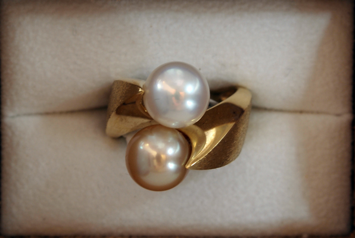
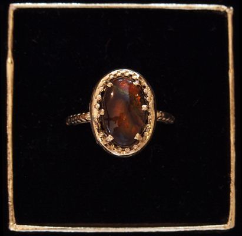

Featured Items
Original Designs
I make original designs in gold, silver, and platinum using a variety of stones. My shop contains an extensive collection of my creations, as well as marketplace and traditional favorites. I have a wide variety of stones, and assure you that I have one that will fit any mounting and budget. I specialize in contemporary design, but I keep an eye towards the classic and traditional themes. I consider all motifs, and make use of geometric, figurative, and abstract shapes to create simple yet exquisite adornments.
In my original designs I use both the traditional and the more uncommon stones. I also use a variety of shapes and forms, from geometric through figurative to abstract. On the far left a pendant with Dendritic Drusy Quartz is set in silver with 14 kt gold accents. It employs a geometric shape that suggests an organic one, with the coloration in the stone to emphasize that mimicry. The jasper heart on the right is more direct, but also uses the natural features to augment the shape. The center piece is a drusy chrysocolla pendant. The rare combination of Chrysocolla and Dioptase are arranged in a 24 kt gold setting. An original design, the uncommon stones and the abstract shape feature intriguing deep rich colors that invite attention. This pendant is destined to attain heirloom status and will be a much admired for years to come. Coincidently these stones were obtained from a renowned collector and agent in minerals and gemstones.

|
Jewelry is more than Diamonds
The unconventional stone may represent a better experience and value. Sapphires, rubies, emeralds, pearls, and diamonds are timeless, but there is a realm of gems beyond them. Explore this page to see a variety of gems in equally diverse selection of mountings. My favorite – preferred stones are jaspers and agates from the four corners. In the pictures on this site you will see many original designs featuring every color and shape. I have many loose stones that are available for your custom piece.
These pieces are all original designs using less common stones. Priday Plume Jasper on the far right is in sterling silver. Next to it a boulder opal, then a dendritic chrysopase with an accent peridot set in 14 kt gold. The teardrop tourmaline rose quartz, lime-colored chrysopase, and a jadeite jade

|
Custom Work
Custom designs begin with selection of the feature stone. There is more than type and color, the size and shape are determined by the cut. A stone may assume a natural shape and polished to brighten its appearance; or it may be cut into cabochon shapes. I search for stones with natural color and luster, and inform you if a gem has been treated to enhance its appearance. Custom pieces can feature the traditional such as turquoise, or something unexpected such as rutilated quartz.
|  |  |
Pearls
Pearls and diamonds are classic stones and always a fine addition to any collection. These pieces incorporate contemporary and classic design. On the left is a pendant from another jeweler, Paul Kaiser, better known as Cowboy. Two Akoya pearls in 14 kt gold, it is a classic design from a present-day artisan. This piece will balance out the traditional formal wear or the current fashion. Tahitian and Keshi Pearl Necklace in the center and the South Seas Black and Grey Pearl Necklace on the right are another bow to the traditional. The pearls were treasured in the classic era; their natural luster was prized at a time when gems went unpolished. Golden pearls have a rich honey tint and highlight the pure whiteness of the Tahitian pearls. Black and grey pearls are a natural complement and match for a variety of clothing hues and textures, from white silk to royal blue velvet, these gems harmonize with any ensemble.
 |
 |
Marketplace Mountings and Recovered Stones
In this series, The center image is a ring with Ceylon sapphires and diamonds. The sapphires were recovered from a Modern Art piece and are truly magnificent gems. Untreated and equisitely cut this ring displays the enduring beauty and value of heirloom quality jewelry.
Although these rings are commercial mountings, the stones were selected for their fire and brilliance. The tourmaline on the right center represents a [tremendous value]. Set in a sterling silver mount. A fine quality tourmaline in a classic design, this piece is a demonstration of the belief that the right stone in the right mount need not cost $500.
|  |
Original and traditional designs
on the left is a traditional design, in ruby and diamond. The Fire Agate is a rare find of high quality. The center image is a ring with gold in quartz, a mimic of pearl. The Jadeite jade ring is an exquisite cabochon cut in a 14 kt mount. The last one is a sapphire and and diamonds ring in 18 kt gold. It is a 5 mm very fine quality sapphire surrounded by 30 points TW diamonds.